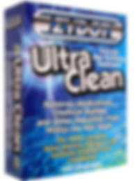

Detox / Cleanses
ZYDOT SHAMPOO
SHAMPOO away external barriers such as hair spray, styling and finishing products, and everyday dirt and grime buildup to expose the inner hair. PURIFY by penetrating the hair shaft's inner structure to dissolve, release, and remove the chemicals and medications bonded within the hair shaft. Leaves your hair pure, clean, and free of all unwanted contaminants and impurities. CONDITION hair to control tangles, add sheen, and improve manageability. ZYDOT Ultra Clean Shampoo and Purifier contains Aloe Vera to help condition both the hair and scalp while the penetrating cleansing agents remove impurities. The Aloe based conditioner will leave your hair tangle free and full of body. T PRODUCT INFO THE ONLY HAIR DETOX TREATMENT WITH SHAMPOO, PURIFIER AND CONDITIONER. The #1 Selling Detoxifying Hair Treatment on the Market Is Designed To: The following information will help Ultra Clean Internal Hair Purifying Treatment be as effective as possible, and should be followed carefully before using the product. For higher toxin levels, thicker hair, or for hair 6" or longer, 2 or more applications are recommended to ensure the purifying process is accomplished. Avoid ingested and airborne toxins 24 to 48 hours before using Ultra Clean. Wash your hair with your regular shampoo before beginning step #1. Use a new comb or brush after using Ultra Clean to avoid recontamination. Avoid contact with or clean thoroughly items such as eyeglasses, hats, hoodies, car head rests, pillows, etc. to avoid recontamination. Allow approximately 45 minutes to complete the process (steps 1 - 4 )...